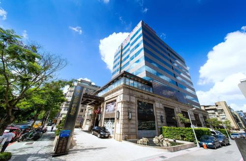

Teks Resensi Hotel Fullon.
Karya : Nicole Abigail Satyadi 8D/24>
Nama Objek : Hotel Fullon
Kategori : Hotel
Alamat : No. 226, Jiangguo South Road, Taipei City, Taiwan
Nama Pemilik : Lih Pao Group
Tahun Berdiri : 2010
Nomor Telepon : +886 -2-2701-9266
Alamat Website : https://www.fullon-hotels.com
Rating/ Kelas : 4.6 bintang
Hotel Fullon ini merupakan hotel bintang 4.6 yang berada di kota Taipei di Taiwan. Alamat lengkapnya adalah no. 226, JiangGuo South Road, Taipei city, Taiwan. Hotel ini memiliki sekitar 250 jumlah kamar. Hotel ini memiliki 16 lantai, dan juga lantai B1 dan B2. Lantai B1 adalah sebuah ballrom besar yang bisa dipakai untuk Gala Dinner, dan lantai B2 adalah lantai untuk sarapan pagi. Makanan yang bisa diekspektasikan sewaktu sarapan pagi adalah Bacons, Kentang goreng, Chicken Popcorn, Waffles, Roti- roti seperti roti gandum, roti croissant, roti bun. Buah- buahan seperti anggur, apel, semangka, dan lain- lain.
Hotel ini memiliki lumayan banyak fasilitas mewah seperti kolam ranang outdoor, sauna, spa room, restoran, bar/ lounge, pusat bisnis, laundry room/ dry cleaning, resepsionis 24 jam, antar jemput banda. Hotel ini juga menyediakan room service, juga pun satu dispenser pada setiap lantai, bagi penginap yang sering merasa haus, tetapi kurang ingin berjalan jauh. Walaupun ada dispenser pada setiap lantai, di depan lobby Hotel Fullon juga ada sebuah convenience store yang buka 24/7 jam. Selain convinience store area public sekitar hotel itu adalah restoran- restoran, dan supermarket.
|

|